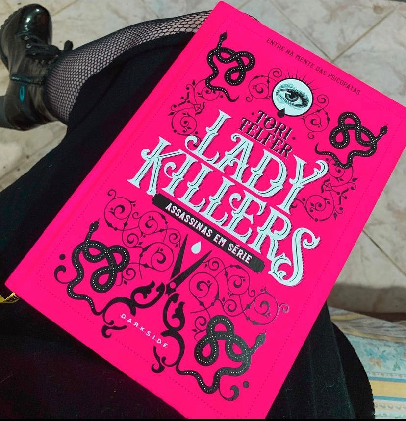

Lady Killers
(TORI TELFER - Darkside)
⭐⭐⭐⭐⭐
⚠️Gatilhos: Assassinato, Violência e tortura.
Um livro sobre serial Killers mulher, escrito por uma mulher! E, que livro meus amigos! Aqui vamos conhecer várias assassinas em série e seus métodos de matar!
Quando pensamos em assassinos em série, pensamos em homens. Mais precisamente, em homens matando mulheres inocentes, vítimas de um apetite atroz por sangue e uma vontade irrefreável de carnificina. As mulheres podem ser tão letais quanto os homens e deixar um rastro de corpos por onde passam ― então o que acontece quando as pessoas são confrontadas com uma assassina em série? Quando as ideias de “sexo frágil” se quebram e fitamos os desconcertantes olhos de uma mulher com sangue seco sob as unhas?
A primeira coisa que preciso falar é sobre a edição belíssima da Darkside que nunca deixa a desejar.
Segunda coisa é que precisamos parar de achar que mulheres não são capazes de cometer crimes brutais. Hoje, sabemos que as motivações de assassinas em série são diferentes dos homens, mas isso não diminui a maldade. No livro iremos encontrar a história de várias assassinas e algumas bem famosas como a “Vovó Sorriso” que de boa velhinha não tinha nada. O livro é perfeito e o único defeito é que ele acaba!